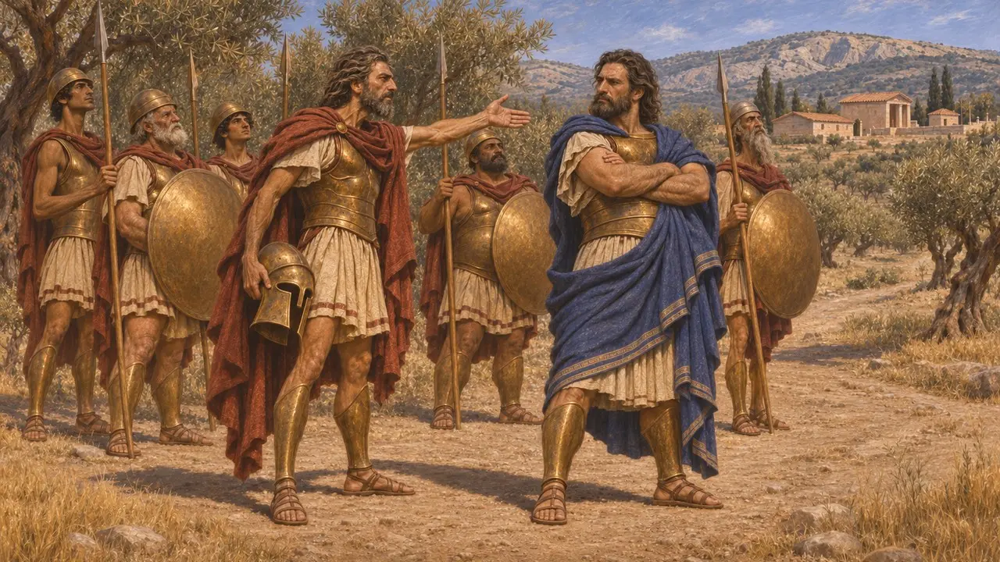
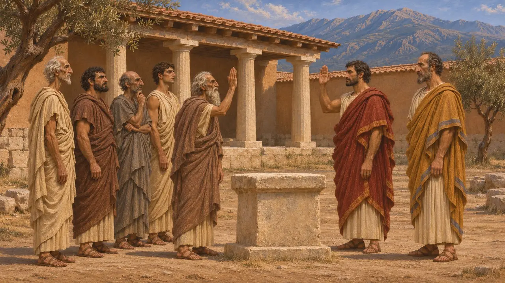
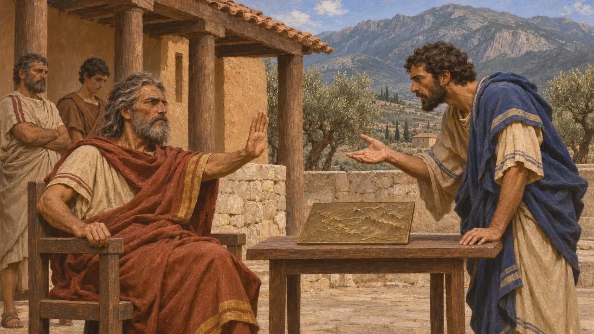
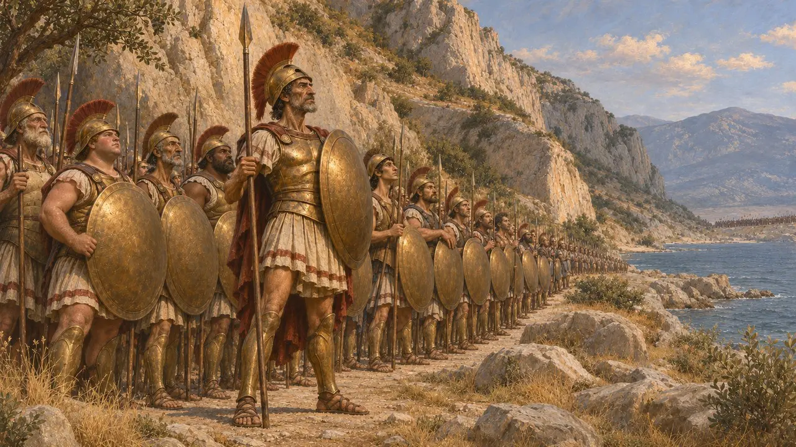
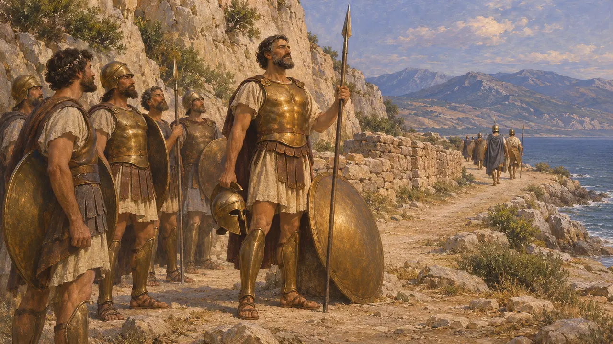

ملكا إسبرطة والإفوروي
ملكا إسبرطة الوراثيان وقضاتها الخمسة المنتخبون سنويًا، لاكونيا، القرنان السادس والخامس ق.م
كان لإسبرطة ملكان في آن واحد، واحد من كلٍّ من البيتين الملكيين، يقودان جيوشها ويتوليان الكهانة مدى الحياة. وإلى جانبهما خمسة إفورات يُنتخبون كل عام، ولهم أن يستدعوا الملكين ويحاكموهما ويكبحوهما. وقد حدّد هذا النظام المزدوج طريقة تعامل إسبرطة مع فارس، من رفض نجدة الثورة الأيونية إلى حملات ثرموبيلاي وبلاتيا وميكالي.
في اللعبة: تقدّم اللعبة ليونيداس وكليومينيس وديماراتوس وليوتيخيدس ملوكًا لإسبرطة، وباوسانياس وصيًّا على العرش لا ملكًا. وهذا يتبع هيرودوت، الذي يقول إن باوسانياس قاد الجيش في بلاتيا نيابةً عن ابن ليونيداس الصغير.

بيتان ملكيان
رواية قديمةيذكر هيرودوت أن بيتي الأجياديين واليوروبونتيين حكما جنبًا إلى جنب، وكلاهما يدّعي النسب إلى هرقل. ويعدّد امتيازات الملكين: الكهانة، ونصيبًا مضاعفًا في الأضاحي، وقيادة الجيش في الحرب، ومراسم حداد عام مهيبة عند الموت. ويروي أن كليومينيس وديماراتوس تخاصما في حملة قرب إليوسيس نحو عام 506 ق.م، وأن قانونًا صدر بعدها يمنع الملكين من الخروج مع الجيش معًا.
Herodotus 5.75; 6.51-52; 6.56-58

الإيفورات وسلطتهم
متنازع عليهكان يُختار كل عام خمسة إيفوريين. ويذكر كسينوفون أنهم كانوا يتبادلون الأيمان مع الملكين كل شهر: فيُقسم الملكان على الحكم وفق القوانين، وتُقسم المدينة على صون المُلك ما داما على ذلك. وأصل هذا المنصب موضع خلاف، إذ ينسبه هيرودوت إلى المشرّع ليكورغوس، بينما يقول بلوتارخ إنه أُضيف لاحقًا في عهد الملك ثيوبومبوس. ويروي هيرودوت أن الإيفوريين هم الذين تلكّأوا في عام 479 ق.م ثم أرسلوا الجيش إلى بلاتيا.
Xenophon, Constitution of the Lacedaemonians 15.7; Herodotus 1.65; 9.7-11; Plutarch, Lycurgus 7

كليومينيس وديماراتوس وفارس
رواية قديمةيروي هيرودوت كيف رفض كليومينيس استغاثة أريستاغوراس طلبًا للعون على فارس نحو عام 499 ق.م، حين علم أن سوسا تقع على مسيرة ثلاثة أشهر في الداخل. ثم دبّر كليومينيس لاحقًا خلع شريكه في الملك ديماراتوس بتهمة عدم شرعية نسبه، مستعينًا بكاهنة دلفي بعد أن رشاها، فتولى ليوتيخيدس عرشه. ففرّ ديماراتوس إلى داريوس، وأشار لاحقًا على خشايارشا في زحفه على بلاد اليونان.
Herodotus 5.49-51; 6.61-70; 7.101-104

ليونيداس وباوسانياس وليوتيخيدس
رواية قديمةفي سنة 480 ق.م صمد ليونيداس، الملك الأغيادي، في ثرموبيلاي مع حلفائه و300 إسبرطي اختيروا، كما يقول هيرودوت، من رجال لهم أبناء أحياء. وقد لقي حتفه هناك. ولأن ابنه بليستارخوس كان صبيًا، قاد ابن أخيه باوسانياس الجيش اليوناني في بلاتيا سنة 479 ق.م بصفته وصيًا على العرش. وفي السنة نفسها قاد ليوتيخيدس، الملك اليوريبونتي، الأسطول اليوناني وأنزل جنوده إلى البر فهزموا الفرس عند ميكالي.
Herodotus 7.204-205; 7.220-224; 9.10; 9.96-106

نبوءة موت ملك
أسطورة لاحقةيروي هيرودوت نبوءة من دلفي صدرت في مطلع الحرب: إما أن يدمّر الفرس إسبرطة، وإما أن تبكي إسبرطة ملكًا من سلالة هرقل. ويصوّر ليونيداس وقد اختار البقاء في ثرموبيلاي، ومن دوافعه أن يحقق النبوءة ويكسب المجد لإسبرطة. والأرجح أن الأبيات صيغت بعد وقوع الحدث، والقصة تؤدي دور حكاية أخلاقية عن تضحية الملك.
Herodotus 7.220
المصادر
- Herodotus, Histories, books 1, 5-9
- Xenophon, Constitution of the Lacedaemonians
- Plutarch, Lycurgus
- Aristotle, Politics 2.9
- P. Cartledge, Sparta and Lakonia, 2002
- P. Cartledge, Agesilaos and the Crisis of Sparta, 1987